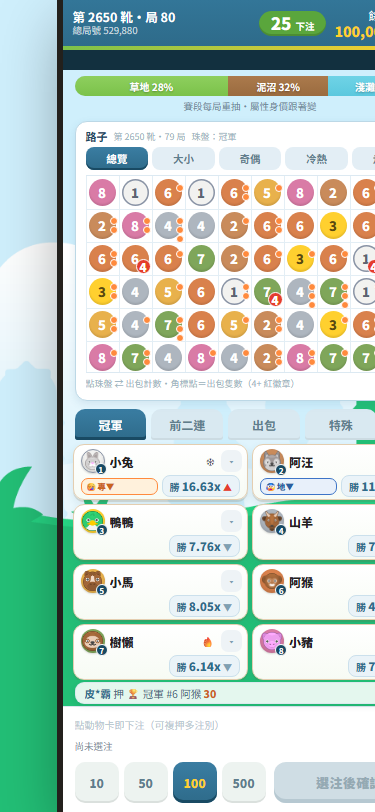

| 步驟 | 內容 | 結果 |
|---|---|---|
| 同步 | 最新 game-b-demo → demo-game-client/animalrace/（鏡像覆蓋，含 B10 新增四檔 ambience/autobet/log-ui/sfx） | ✓ 36 檔 |
| master | commit fed59b5；pull --rebase 後 push——連同先前被權限攔下的 B07-R2 快照 bc512f5 一併推上，這次未被攔 | ✓ 已推送 |
| gh-pages | 沿 chainfire 慣例：animalrace/ 加入 gh-pages 分支根目錄，commit d166103（以 git worktree 操作，master 工作區與其他遊戲資料夾零觸碰） | ✓ 已推送 |
| 紅線 | arena / Beyblade / chainfire / racing-game 四資料夾 | ✓ 零修改 |
| 線上生效 | 推送後即生效，資源請求全 200（含 mc-worker.js），載入順序正確 | ✓ |
| 項目 | 實測方法與證據 | 結果 |
|---|---|---|
| 30 輪連跑無錯誤、無記憶體成長 | 本地掛自動化記錄器連跑局 529867–529896（30 局跨度、觀測 29 筆*）：遊戲 console／onerror／unhandledrejection 零錯誤；JS heap 首 2.3MB → 末 2.7MB（峰值 4.0MB，震盪非成長）；注單歷史恰在 50 筆封頂、路子存檔 60KB 有限 | ✓ 通過 |
| 演出與賽果 10 輪抽查零矛盾 | RaceFX._verify(12)：12 局衝線順序＝名次、全員達終點、衝線時刻在窗內、曲線單調、出包點位／時刻正確、「出包者不看似快贏」鐵則量化檢查——零違規 | ✓ 通過 |
| 路子五頁籤一致；拖曳／切換／落珠／自癒；背景分頁回前景零洞 | 總覽／大小／奇偶／冷熱／走勢就地切換全正常、同靴同局數、版位高度恆定零跳動；拖曳雙向實測（scrollLeft 470→310→470）；分頁背景 20+ 局後回前景：當靴 96 局紀錄 96/96 珠零洞 | ✓ 通過 |
| B10 特殊注別四組實下對帳＋自動下注 | 30 輪 soak 共實下 63 注（輪替涵蓋 win／exacta／out／大／奇／熱門／零出包），逐注驗 派彩=floor(注額×賠率)——零誤差；抽局 529881 四組全中 +640 與 log 頁分毫不差；自動下注於線上網址實跑：範本 🛣奇 100→5 局跑滿自然停（停法「跑滿局數」），浮條逐局計數、累計 +124 與錢包一致 | ✓ 通過 |
| 勝負 log 頁鏈路抽帳 | 局 529881：總覽金列「4 注 +640」→ 詳細頁排名 7,2,1,3,5,6,4,8 與引擎紀錄逐位一致，4 筆注單（大 +174／奇 +170／熱門 +197／零出包 +499）各附唯一單號與回報鈕，合計 400→1,040 = +640 | ✓ 通過 |
| 封盤 200ms 內拒單 | 線上精準邊界測試：歸零前 300ms 收單、歸零後 +80ms 即拒（reason: locked）、+180ms 亦拒；soak 期間 24 次 locked 探測全拒。（引擎收注純由牆鐘推導，數學上歸零即拒） | ✓ 通過 |
| 手機 375×812 與桌面；file:// 直開 | 375×812：8 卡全見、零橫向溢出、唯一捲動容器捲條隱藏（幾何斷言）；桌面 800px 正常（截圖如下）；file:// 以無頭 Chrome 直開實測：遊戲起跑、路子「第 2650 靴」與伺服器版同步推導、8 卡與錢包渲染正常（Worker 在 file:// 必然不可用→自動回退主執行緒，實證回退路徑有效） | ✓ 通過 |
| 重整接回；錢包／歷史持久化 | 於線上網址實測：局 529875 下注中 reload → 9 秒後接回 529876 betting（局號連續），錢包持久化，reload 期間掛單於回補時照常結算入帳（+227） | ✓ 通過 |
| 線上實測 2 局含下注結算 | 實跑 10+ 局：手動 2 局對帳（win 中獎 2,248=floor(200×11.24)、big 444／362 全準）＋自動下注 5 局＋封盤／重整測試局，全數對帳一致 | ✓ 超標通過 |
* 記錄器於局 529868 封盤中途安裝，該局落在觀測窗邊界外（引擎歷史內該局存在、資料完整），其後 28 局觀測連續無斷——是測試腳本的起步缺口，非遊戲漏局。

game-b-demo/（本地）＝ demo-game-client/animalrace/（發布，master fed59b5 / gh-pages d166103）game-b-demo/js/round-engine.js（頭部註解 5 處）reports/B09-線上375x812.png、reports/B09-線上桌面800.pngreports/B09-驗收報告.html